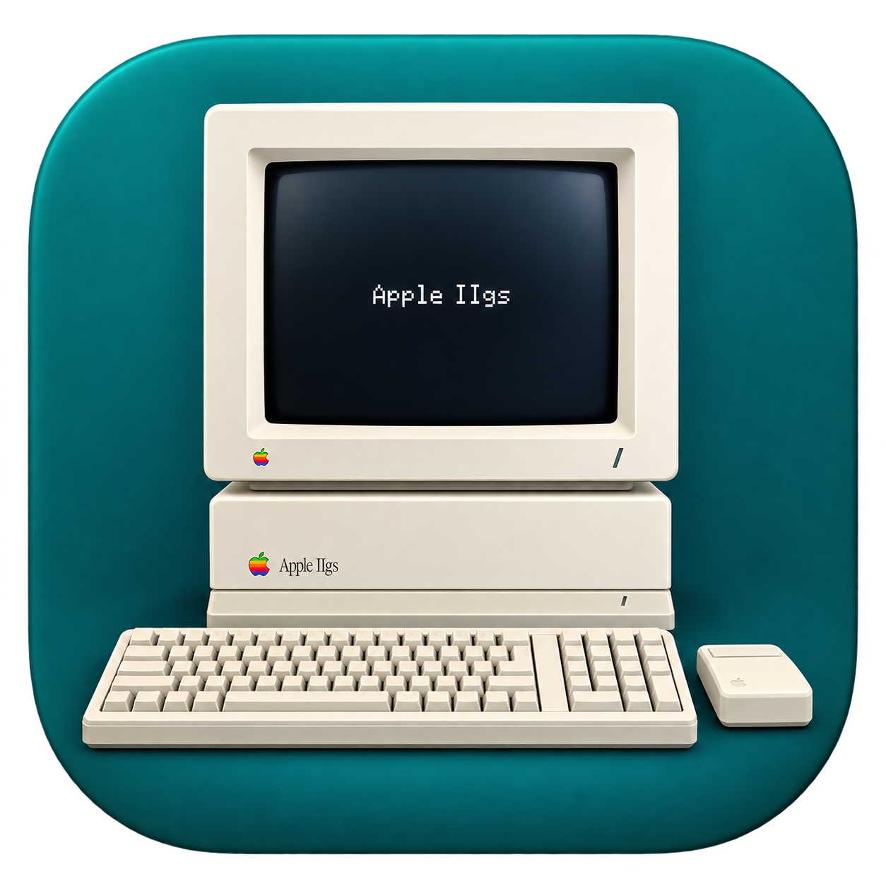
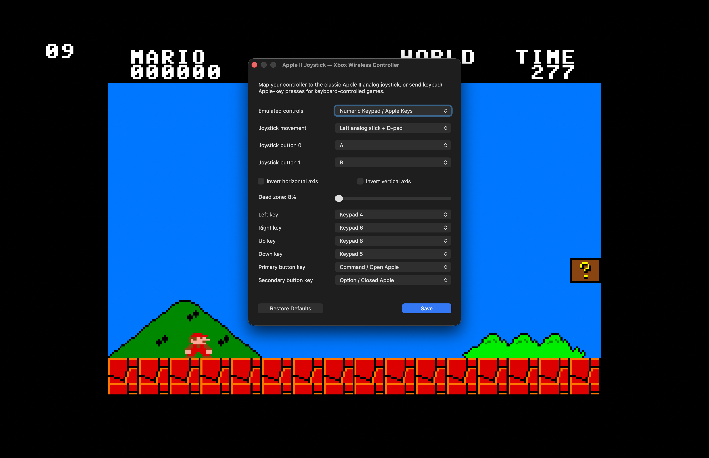

Bring your disks.
Choose one image or a whole set. Name the disks, select the drives you need, and choose where the emulated machine boots.
Give your Apple II favourites a place in the Dock. Package a disk image, pick an icon, and build a standalone player that feels at home on your Mac.
Public alpha · v__VERSION__ · macOS 13+ · Intel & Apple Silicon
Free & open source. Locally signed, not notarized.

A builder for the person setting things up.
A simple player for the person pressing play.
Choose one image or a whole set. Name the disks, select the drives you need, and choose where the emulated machine boots.
Give the app a name and an icon. Find artwork with the built-in image search, or bring your own and crop it to a square.
Export a standalone Mac app. Players share installed ROMs, or help you download a supported ROM or select your own. Reopen a player in the builder to edit its defaults and save changes.
BYO SOFTWARE The builder and player template include no ROM firmware or game disks. Your exported app uses the disk images you supply.
Keep the Mac niceties.
Keep the Apple II character.

Start in full screen, switch whenever you like, or resize the window in exact integer multiples.
Map a Mac gamepad to the classic two-axis Apple II joystick, or send keypad and Apple-key presses for keyboard-controlled games.
Choose 1.0, 2.8 or 8 MHz, or run unlimited. Swap disks from the menu when your app has more than one.
A whole Apple II or IIgs inside a Mac window. Here are a few real players in action.
Software shown is supplied separately and is not included in the builder download. Select a screenshot to see it full size.
Yes, the emulated computer needs a bootable disk or system image. Some games need a separate ProDOS or GS/OS system disk. The builder packages your setup; it doesn’t install an operating system for you.
Yes. Package multiple images, give them readable menu names, and choose the available 5.25-inch, 3.5-inch or SmartPort drives. A one-disk, one-drive setup keeps the disk-swapping menu out of the way.
The player copies its disk images into its own Application Support folder on first launch. The emulator uses those writable copies, keeping the images inside the app intact.
Compatibility depends on the software, ROM, system disk and controls it expects. This is an early release. Some software will need configuration, and some may not work yet.
For now, a2emu is a macOS project. The builder and exported players run on Intel and Apple Silicon Macs with macOS 13 or later.
Apple IIGS Player Builder · Public alpha v__VERSION__
A universal Mac app by theredhead.
These builds are locally signed and aren’t notarized by Apple. macOS may block the first launch.
Only approve a download you trust. Exported players may need the same first-launch approval on another Mac.
a2emu brings a Swift macOS builder and player to the work of Kent Dickey’s KEGS and GSplus by Dagen Brock and contributors. Source for the builder, player and bundled emulator components is available on GitHub. Distributed under GPL-3.0.